What every screen and button of Mirryl does: mirroring your Android phones on this PC, and managing their apps - one phone or many.
Mirryl shows the screen of an Android phone on this PC and lets you use it with the mouse and keyboard, over the USB cable or over your own Wi-Fi. It also lets you manage the phone's apps from the PC. Nothing goes over the internet.
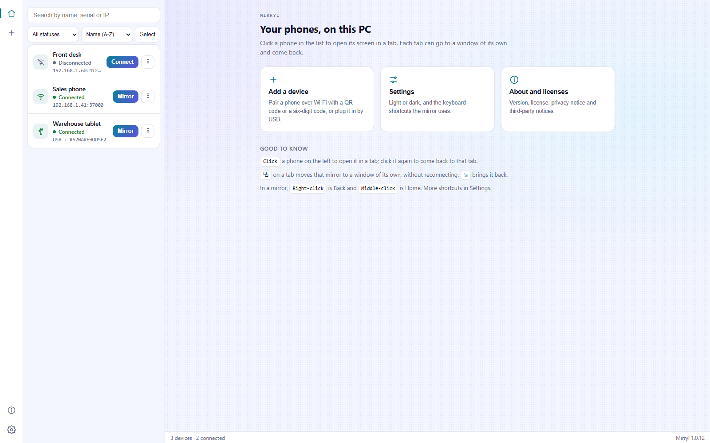
| House | Always goes back to this main screen, from anywhere. |
| + | Adds a phone (section 3). |
| (i) at the bottom | About and licenses, and this user guide (section 15). |
| Gear at the bottom | Settings: theme and keyboard shortcuts (section 14). |
| Search box | Finds a phone by its name, serial number or address. |
| All statuses | Shows only the phones connected by USB, by Wi-Fi, or disconnected. |
| Name (A-Z) | Sorts the list: by name, by when each was last seen, or by when it was added. |
| Select | Lets you tick several phones and act on all of them at once (section 6). The search, filter and Select appear when you have two phones or more. |
| Icon and state | Wi-Fi or cable, and Connected, Connecting, Disconnected or Mirroring. |
| Connect | On a disconnected phone: connects to it over Wi-Fi. |
| Mirror / Show | Opens the phone's screen in a tab (section 4). Show means it is already open: it takes you to its tab. |
| ⋮ (three dots) | Opens the phone's page: its apps, its information and everything that can be done to it (section 7). |
| Clicking the row | The same as Mirror. |
| Right-click on the row | A short menu of quick actions (section 5). |
The line at the very bottom counts your phones and says which one the open tab shows.
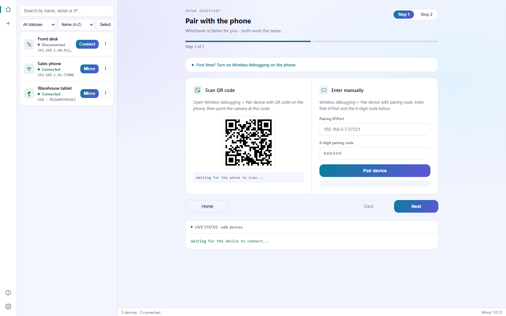
Home, Back and Next move between the steps. The Live status box shows what the connection service sees.
Press Mirror on a phone (or click its row). Its screen opens in a tab at the top of the window. Each phone has one tab; pressing Mirror again goes back to it.
| Corners (Fill) | Makes the picture fill the whole tab, cutting the edges that do not fit. Press again to see the whole screen with bars. |
| ⧉ (own window) | Moves the mirror to a window of its own, without reconnecting. In the tab, Bring it back here (or ⇲) returns it. |
| ✕ (close) | Closes the mirror. A middle-click on the tab does the same. |
| Click | Taps the screen. Click and drag to swipe. |
| Right-click | Back. |
| Middle-click | Home. |
| Mouse wheel | Scrolls. |
| Keyboard | Types on the phone. Ctrl+A Ctrl+C Ctrl+X Ctrl+Z work as on the phone. |
| Copy and paste | Text is shared between the two clipboards while the mirror is open, both ways. |
| Sound | The phone's sound plays on the PC (Android 11 and newer). The microphone is never used. |
| Ctrl+S | Turns the phone's screen off while the mirror keeps running. Again to turn it back on. |
| F1 | Home screen. |
| F2 | Recent apps. |
| Ctrl+R | Puts the window back to the shape of the picture. |
| Ctrl+F | Fill the space, like the Fill button. |
If a phone mirrored over Wi-Fi is plugged in by cable, the mirror offers Switch to USB (smoother) or Stay on Wi-Fi.
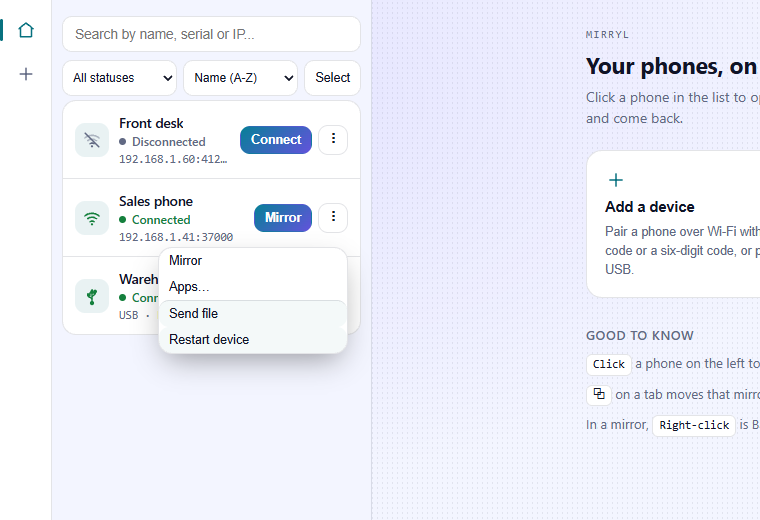
Right-click a phone in the list for the actions you use most, without leaving the screen you are on:
| Mirror / Show | Opens its screen, or goes to its tab. |
| Apps… | Opens the phone's page on its apps. |
| Send file | Copies a file from the PC to the phone's Download folder. |
| Restart device | Restarts the phone, after asking. It drops off for about half a minute and comes back by itself. |
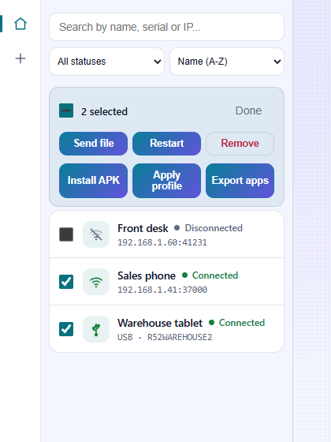
Press Select above the list and tick the phones (the box at the top ticks every phone shown). The bar that appears acts on all the ticked phones:
| Send file | The same file to every phone. |
| Restart | Restarts every phone, after asking. |
| Remove | Removes them from Mirryl (not from anywhere else). They can be added again by pairing. |
| Install APK | Installs the .apk files you choose on every phone. |
| Apply profile | Applies a saved profile to every phone (section 12). |
| Export apps | Saves the apps of every phone in one CSV file for Excel (section 7). |
| Done | Leaves the selection. |
Phones that are not connected are skipped, and the summary at the end says so.
The ⋮ of a phone opens its page. On the left, a column with everything about that phone; on the right, the screen you choose.
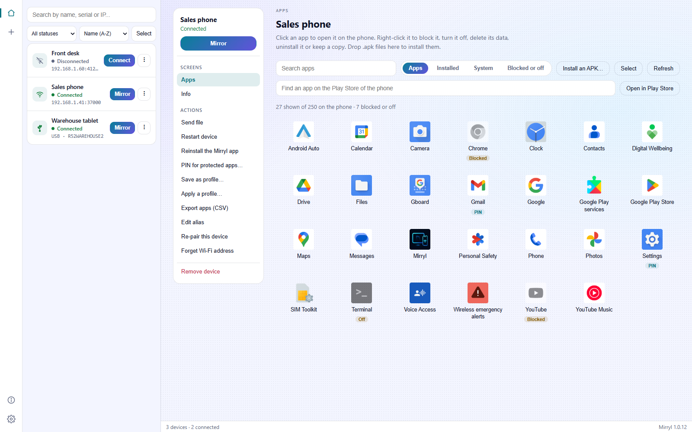
| Name and state | The phone's name, and whether it is connected or mirroring. |
| Mirror / Show | Opens its screen in a tab. |
| Apps | The apps of the phone (section 8). |
| Info | Battery, storage, Android version and more (section 13). |
| Send file | Copies a file from the PC to the phone's Download folder. |
| Restart device | Restarts the phone, after asking. |
| Reinstall the Mirryl app | Puts the Mirryl app back on the phone - for example, after someone uninstalled it there - with its permission, without pairing again. It also updates an older one. |
| PIN for protected apps… | Chooses or changes the PIN of this phone (section 11). |
| Save as profile… | Saves what this phone has blocked and protected as a profile (section 12). |
| Apply a profile… | Applies a saved profile to this phone. |
| Export apps (CSV) | Saves the list of the phone's apps in a CSV file for Excel, in Documents\Mirryl\Inventory, and shows it in Explorer. It says, for each app, its version, whether it came with the phone, whether it is blocked, off or behind the PIN, and when it was installed and updated. |
| Edit alias | Renames the phone in Mirryl. Type the new name and press Enter. |
| Re-pair this device | Opens the pairing steps again for this phone. |
| Forget Wi-Fi address | For a phone you only use by cable: Mirryl stops looking for it on the network. Shown only for phones with a Wi-Fi address. |
| Remove device | Removes the phone from Mirryl, after asking. You can tick Also delete its saved files to delete its folder in Documents\Mirryl too. |
It reads the apps of the phone when it opens (a few seconds). A click on an app opens it on the phone and opens its mirror. A right-click opens everything that can be done to it (section 9).
| Search apps | Finds an app by its name or package name. |
| Apps | The apps with an icon on the phone, like its app drawer. |
| Installed | Only the apps installed on the phone, not the ones it came with. |
| System | The apps that came with the phone, including the ones with no icon. |
| Blocked or off | The apps that are blocked or turned off. |
| Install an APK… | Installs .apk files from the PC on the phone. You can also drop .apk files on the screen. |
| Select | Lets you tick several apps (section 10). |
| Refresh | Reads the apps again. |
| Open in Play Store | Type the name of an app and the phone's Play Store opens with that search. Installing from there is a tap on the phone: Android does not allow it from a computer. |
| Blocked | It stays on the phone, greyed out, and does not open. |
| Off | Turned off: it is gone from the phone until it is turned back on. |
| PIN | It asks for the PIN before opening. |
| Protected | The phone needs it to keep working (in the System view): only some actions are allowed on it. |
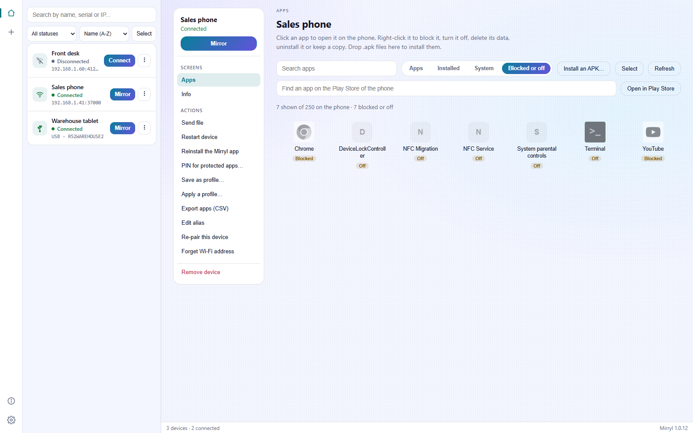
An app shown with only its first letter is one whose icon the phone could not draw (it happens with some Samsung apps whose icon changes, like the calendar). It works the same.
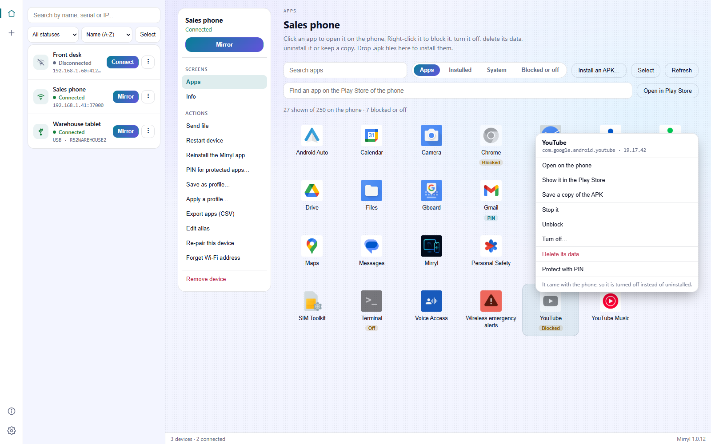
| Open on the phone | Opens it on the phone. |
| Show it in the Play Store | Opens its Play Store page on the phone. |
| Save a copy of the APK | Copies the app (not its data) to the PC, in Documents\Mirryl\<phone>\APKs, and shows it in Explorer. |
| Stop it | Force-stops it. It starts again the next time it is opened. |
| Block… / Unblock | Blocks it: it stays on the phone, greyed out, and does not open until it is unblocked from Mirryl. Its data is kept. Android does not allow blocking a few apps (Settings, the Play Store): those are turned off instead, and Unblock brings them back the same way. |
| Turn off… / Turn on | Turns it off: it disappears from the phone, with its data kept, until it is turned on again. If the phone uses it for something, that stops working too. |
| Delete its data… | Deletes everything the app keeps on the phone (accounts, settings, files). It cannot be undone. |
| Uninstall… | Removes the app and its data. It cannot be undone. Only for apps that did not come with the phone: those are turned off instead. |
| Protect with PIN… / Remove the PIN | Makes it ask for the PIN before opening (section 11). |
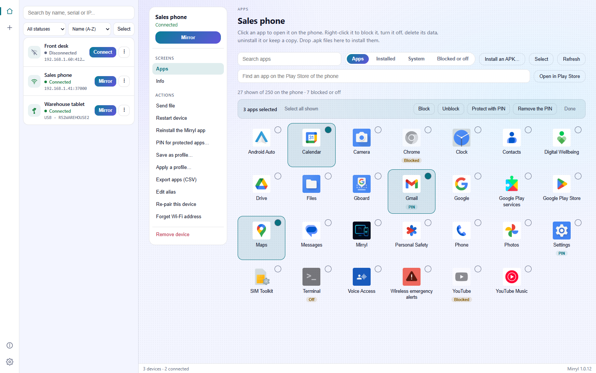
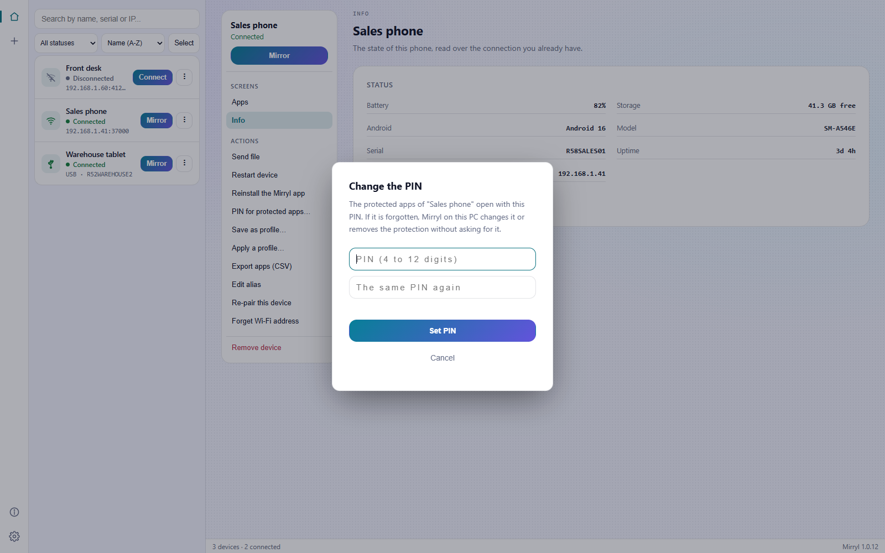
A protected app keeps working, but asks for the PIN on the phone before it opens. It is a gentler way than blocking to keep people out of an app - for example, out of Settings - while you can still get in from the phone itself.
A profile is a list of apps to block and apps to protect with the PIN, saved with a name - for example Employee or Kiosk - to give several phones the same set-up.
| Choosing the profile | Click it in the list. Delete deletes that profile. |
| Make the phone exactly like the profile | Ticked: Mirryl also unblocks and takes the PIN off the apps the profile does not name. Not ticked: it only adds what the profile says. |
| A phone with no PIN yet | If the profile has PIN apps, Mirryl asks for a PIN once and sets it on every phone of that run that has none. |
Apps the profile names that a phone does not have are skipped, and the summary lists them.
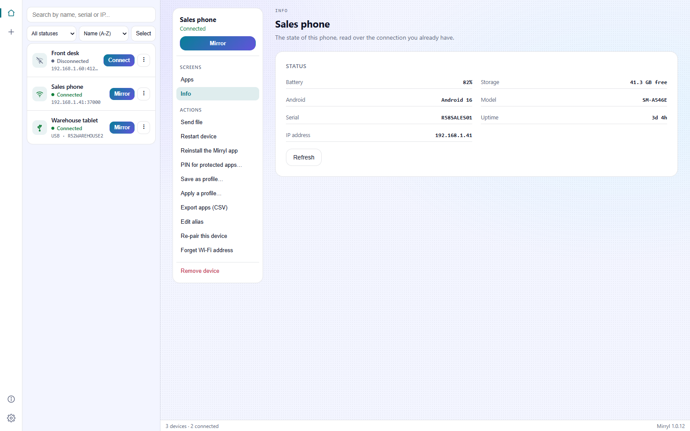
The phone's battery, free storage, Android version, model, serial number, how long it has been on, and its address on the network. Refresh reads it again.
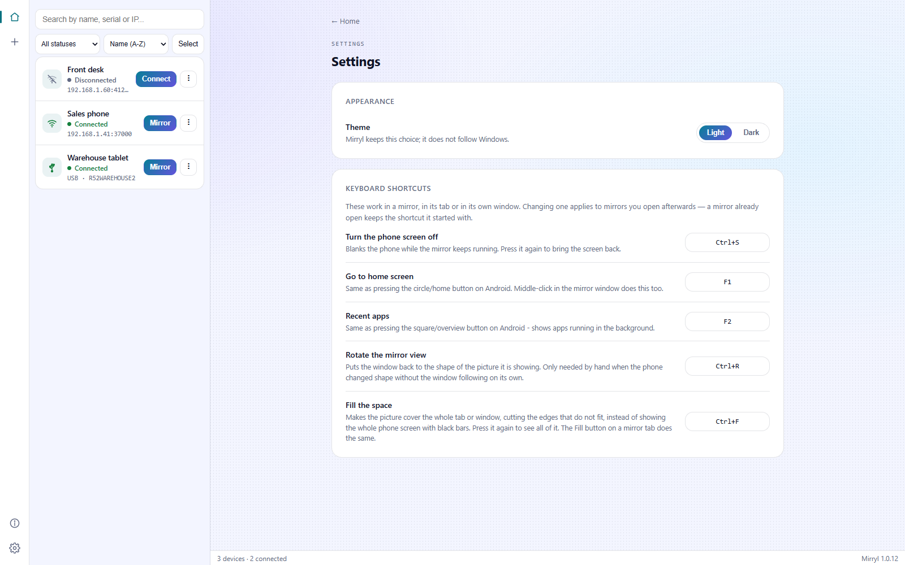
| Theme | Light or dark. Mirryl keeps your choice. |
| Keyboard shortcuts | Click a shortcut and press the new keys. Reset puts back the original one. They apply to mirrors opened afterwards. |
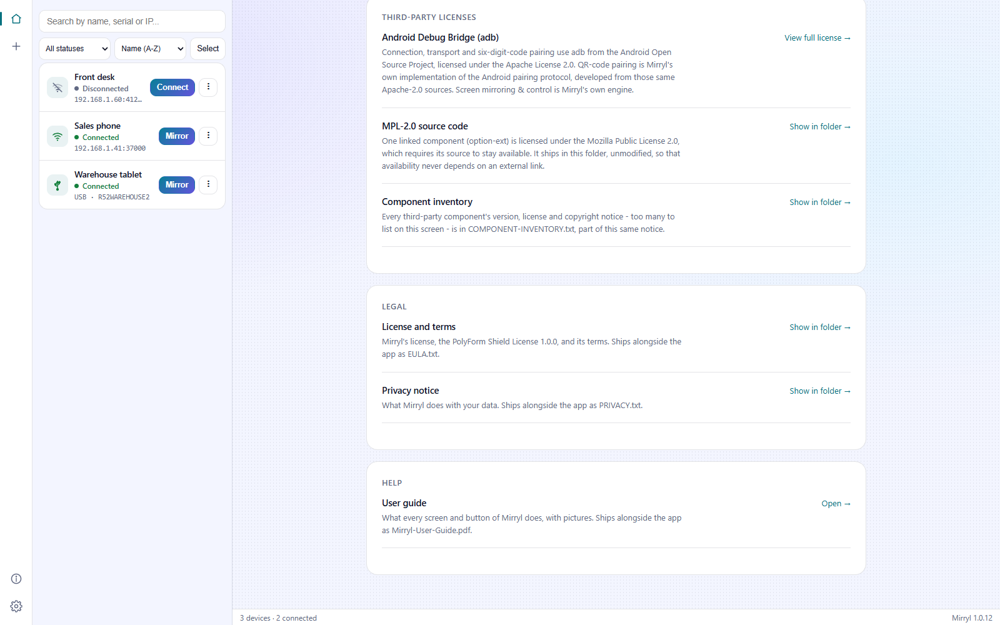
Mirryl's version, a link to its repository, the third-party licenses, Mirryl's license and terms (EULA.txt), the privacy notice (PRIVACY.txt) and this guide. Show in folder opens the folder where each file is.
| A yellow notice with Repair on the main screen | Windows is missing something Mirryl needs (a firewall rule, or the reconnection service). Repair fixes it; Windows asks for administrator once. Not now hides it. |
| A phone does not reconnect over Wi-Fi | Check that it is on the same network and that Wireless debugging is on. Press Connect. If its address changed, Re-pair this device on its page. |
| The phone does not come back by itself after a reboot | The Mirryl app may be missing or old on it: Reinstall the Mirryl app on its page. |
| The apps list says the phone stopped answering | Press Refresh. Mirryl skips, by itself, an app whose icon makes the phone stop. |
| "The Mirryl app on this phone is older than the PIN protection" | Reinstall the Mirryl app on the phone's page, then try again. |
| Phones stop answering in general | Restart ADB in the Add device steps restarts the connection service. |
Blocks and PINs live on the phone, not on the PC. If this PC breaks:
adb shell pm unsuspend <package> unblocks an app, and adb shell pm enable <package> turns back on one that was turned off.%LOCALAPPDATA%\Mirryl\activity.log on the PC (without the PIN).